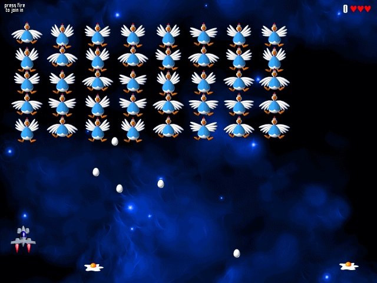

Mario

Pacman
Zuma

Chicken invaders
Pinball Star

Pong
Prince of Persia
Prince of Persia is a fantasy cinematic 2D platformer originally developed and published by Brøderbund and designed by Jordan Mechner. It was initially released in 1989 for the Apple II. It was ported to many platforms, including Amiga, Atari ST and MS-DOS in 1990, Sega Master System, Game Gear and Game Boy in 1992. It is considered the first game of this genre and the precursor of other cinematic platformers such as Another World.